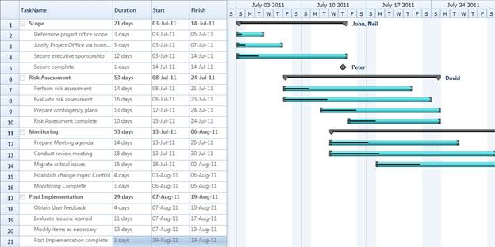

Essential Gantt for Silverlight includes an inbuilt classclled TaskDetails, which is inherited from the IGanttTask interface. A collection of the TaskDetails can be bounded as an ItemsSource for the GanttControl.
Use Case Scenarios
You can easily create the task details collection for your project using the TaskDetails class or by creating a new class by inheriting the IGantt interface.
Binding TaskDetials collection to Gantt Control
The following code illustrates how to bind the Task Detials to the Gantt Control:
|
[XAML] <Sync:GanttControl ItemsSource="{Binding GanttItemSource}" x:Name="Gantt" >
|
|
[C#] //Initializing Gantt ViewModel model= new ViewModel();
|
|
[C#] GanttItemSource = new ObservableCollection<TaskDetails>(); GanttItemSource = GetDataSourceStartToStart();
ObservableCollection<TaskDetails> GetDataSourceStartToStart()
TaskName = "Scope", StartDate = new DateTime(2011, 1, 3), FinishDate = new DateTime(2011, 1, 14),
Progress = 40d }); TaskName = "Determine project office scope", StartDate = new DateTime(2011, 1, 3), FinishDate = new DateTime(2011, 1, 5),
Progress = 20d }); TaskName = "Justify Project Offfice via business model", StartDate = new DateTime(2011, 1, 6), FinishDate = new DateTime(2011, 1, 7),
Progress = 20d }); TaskName = "Secure executive sponsorship", StartDate = new DateTime(2011, 1, 10), FinishDate = new DateTime(2011, 1, 14), Progress = 20d }); task[0].Child.Add(new TaskDetails { TaskId = 5, TaskName = "Secure complete", StartDate = new DateTime(2011, 1, 14), FinishDate = new DateTime(2011, 1, 14), Progress = 20d }); return task; } |

Figure 16: BindingTask Details
Samples Link
To view samples:
1. Select Start -> Programs -> Syncfusion -> Essential Studio x.x.xx -> Dashboard.
2. Click Run Samples for Silverlight under User Interface Edition panel .
3. Select Gantt.
4. Expand the DataBinding Features item in the Sample Browser.
5. Choose the Binding Task Details samples to launch.